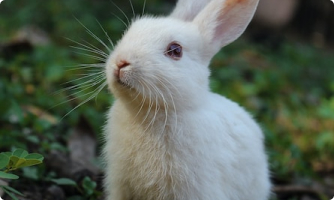

동물의 종류는 다양합니다. 동물은 육식동물, 초식동물 등등.
대체적으로 긴 귀와 솜뭉치 모양으로 위쪽으로 짧아 보이게 말려 있는 꼬리 길이는 생각보다 길다....
대체적으로 긴 귀와 솜뭉치 모양으로 위쪽으로 짧아 보이게 말려 있는 꼬리 길이는 생각보다 길다....
용맹한 이미지와 달리 수컷 사자는 하루의 20시간을 그늘에서 쉬며 보낸다. 이 때문에 게으른 이미지가 강하다...
북극 지방에 서식하는 곰. 현존하는 곰 중에서 가장 큰 곰이다. 겉모습은 귀엽지만 무서운 맹수다...